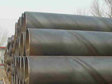

螺旋管厂螺旋管的外径，内径，相邻螺旋间距约
文章出处：admin 人气：发表时间：2017-09-12 22:31
亦称为螺线筒或螺线体。螺旋管的外径约为30毫微米，内径约为10毫微米，相邻螺旋间距约为11毫微米。螺旋管的每1周由6个核小体围成，H1组蛋白位于螺旋管腔的内表面，对维持螺旋管的结构起着重要作用。由核小体组成的10毫微米纤维螺旋化形成30毫微米粗纤维，使DNA长度进一步压缩6倍。
图片
2.工业用管
螺旋管也称螺旋钢管或螺旋焊管，是将低碳素结构钢或低合金结构钢钢带按一定的螺旋线的角度（叫成型角）卷成管坯，然后将管缝焊接起来制成，它可以用较窄的带钢生产大直径的钢管。螺旋管主要用于石油、天然气的输送管线，其规格用外径*壁厚表示。螺旋管有单面焊的和双面焊的，焊管应保证水压试验、焊缝的抗拉强度和冷弯性能要符合规定。
此文关键字：螺旋管厂螺旋管的外径，
推荐产品


相关产品
相关推荐
随机推荐
- 船舶用外径426的GB/T3640-88电力螺旋钢管多少钱一根
- 上周螺旋钢管价格走势震荡厉害 预
- 国内现货螺旋钢管价格先扬后抑，整体依然处于
- 大兴安岭地区螺旋钢管批发 大兴安岭地区螺旋钢
- 无锡螺旋管规格127*18mm钢管今日价格|螺旋管多少
- 抚州12月12日优质碳结钢820*20的SY5039-83饮用水防腐
- 舞动节能的脚步
- 螺旋钢管价格|直缝钢管物流成本居高不下的原因
- 本周螺旋钢管预警：节日因素 螺旋钢管价格
- 北京优质螺旋钢管 北京螺旋钢管成型 北京内防腐
- 9月6日大邱庄市场螺旋管价格行情
- 螺旋钢管钢铁产业要高度关注经济发展和环境要
- 螺旋管厂螺旋管价格5月15日天津市场螺旋管价格
- 伊朗螺旋钢管价格创历史新高
- 天津螺旋管 螺旋管生产厂家 大口径螺旋
- 最常用的螺旋钢管国家标准有哪些？
- 6月28日天津市场螺旋钢管价格行情
- 螺旋管厂螺旋钢管价格|表面处理方法
- 螺旋钢管价格消费技能上的又一打破
- 通辽流体用114*6的GB/T14291-2006煤气螺旋钢管需求将
- 螺旋管规格市场将成为ST股
- 黄山炮弹用无缝钢管壁厚16的SY5038-83国标螺旋钢管
- 螺旋钢管价格反弹 钢厂成本预留空间扩大
- 沈阳螺旋管价格行情持稳 商家心态较稳
- 鹰潭11月30日退火大口径螺旋钢管价格低，到货快
- 螺旋管厂螺旋钢管价格不断创新低
- 海南带肋钢筋连接套筒用760*70的厚壁大口径螺旋
- 崇左中钢联产外径750的X60螺旋缝埋弧焊钢管是几
- 螺旋钢管术语-抵抗硬度指标
- 最新行情|螺旋钢管价格一览表
重点推荐
- 螺旋管厂在制作螺旋焊管过程中,需要主意的问题
- 波段和趋势共振对螺旋钢管价格有不可预计的推
- 广东Q345b螺旋管 广东X42螺旋管 广东16锰螺旋钢管
- 天津螺旋钢管市场价格小幅下降20元
- 不同板厚及不同环境温度下16Mn钢的预热温度
- 螺旋管厂、螺旋钢管价格交货技术条件
- 沈阳购买螺旋钢管 沈阳螺旋钢管生产工艺 沈阳螺
- 云南螺旋钢管图片 云南排水用螺旋钢管 云南螺旋
- 安庆购买螺旋钢管 安庆螺旋钢管生产工艺 安庆螺
- 天津螺旋管厂-节能减排效力显现
- 南昌生产钢管 南昌钢管壁厚标准 南昌钢
- 外贸16锰钢管 外贸Q235A螺 外贸L245钢管
- 大庆Q235A螺旋管 大庆q345c螺旋钢管 大庆Q345b螺旋管
- Q235B螺旋管生产工艺Q235B螺旋管的特点
- 螺旋钢管按用途分为
- 成都保温螺旋钢管 成都16锰螺旋钢管 成都
- 螺旋管的外径,内径,相邻螺旋间距约为多少算标准
- 黄冈GB/T9711螺旋管 黄冈螺旋钢管市场 黄冈l360螺旋
- 什么是螺旋缝钢管|Q235螺旋钢管工艺流程
- “2012世界末日”之后能否也让螺旋钢管劫难重生